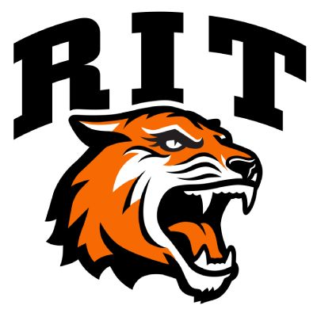

RIT Croatia
Zagreb, Croatia | 2026–Present
Program: Web and Mobile Computing
Studying software development, web technologies, artificial intelligence, mathematics, and analytical problem-solving.
Current Coursework
- Software Development and Problem Solving
- AI and Contemporary Computing
- Web & Mobile I
- Discrete Mathematics
- Critical Thinking
- RIT Connections
- Introduction to Academic English